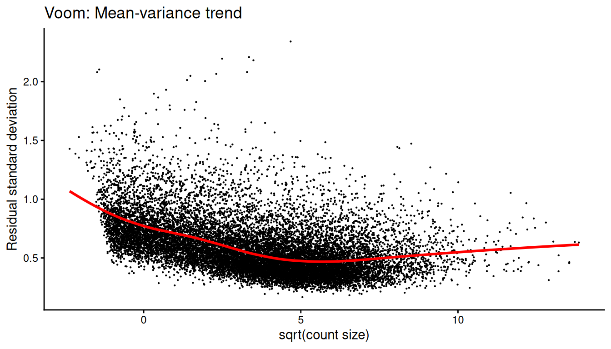
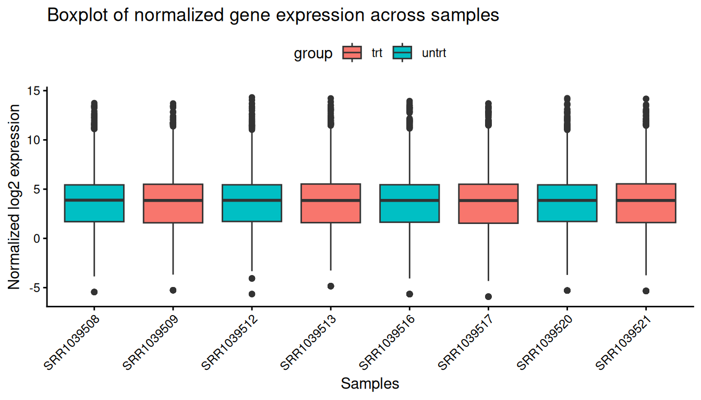
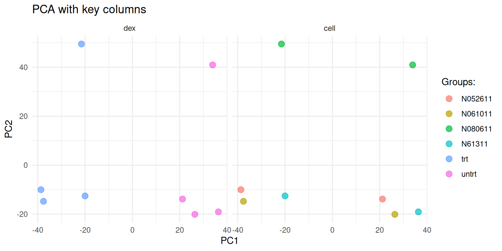
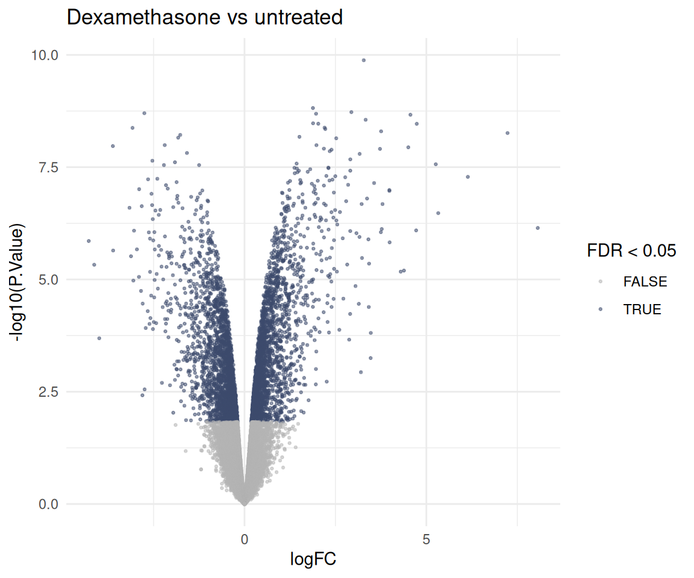

library(bixverse)
library(data.table)
library(ggplot2)
library(magrittr)
library(patchwork)
# the comparison section at the end needs the reference implementations
has_reference <- requireNamespace("limma", quietly = TRUE) &&
requireNamespace("edgeR", quietly = TRUE)Bulk differential expression with BulkDge
2026-09-24
Intro
BulkDge is the class for bulk RNA-seq differential expression. You hand it a count matrix and the sample metadata, and it walks you through the usual steps: sample QC, gene filtering, normalisation, a PCA to see what drives the data, optional batch correction, and then the actual tests. Every step stores its output and its plots on the object, so you can come back to them later.
BulkDge()
-> qc_bulk_dge() # outlier samples, filterByExpr
-> normalise_bulk_dge() # TMM + voom
-> calculate_pca_bulk_dge() # what separates the samples?
-> batch_correction_bulk_dge() # optional, removeBatchEffect
-> calculate_dge_limma() # limma-voom
-> calculate_dge_hedges() # effect sizesNone of this needs limma or edgeR. The numerics run in Rust via edge-rs, a port of the edgeR and limma stack that is checked against both. Towards the end we put the two side by side, and go through where the results match, where they differ on purpose, and what edge-rs does not do (yet).
The data
The classic: airway from Himes, et al.. Four airway smooth muscle cell lines, each treated with dexamethasone or left untreated. Eight samples, and a paired design: the cell line is a nuisance factor we want to account for, the treatment is what we care about.
data("airway", package = "airway")
counts <- SummarizedExperiment::assay(airway, "counts")
meta_data <- as.data.table(
as.data.frame(SummarizedExperiment::colData(airway)),
keep.rownames = "sample_id"
)[, .(sample_id, cell, dex)]
meta_data
#> sample_id cell dex
#> <char> <fctr> <fctr>
#> 1: SRR1039508 N61311 untrt
#> 2: SRR1039509 N61311 trt
#> 3: SRR1039512 N052611 untrt
#> 4: SRR1039513 N052611 trt
#> 5: SRR1039516 N080611 untrt
#> 6: SRR1039517 N080611 trt
#> 7: SRR1039520 N061011 untrt
#> 8: SRR1039521 N061011 trt
dim(counts)
#> [1] 63677 8Setting up the class needs the counts (genes x samples, with names) and a data.table with a sample_id column matching the column names of the counts.
dge_obj <- BulkDge(raw_counts = counts, meta_data = meta_data)
dge_obj
#> Bulk differential gene expression class (BulkDge).
#> Raw counts: 63677 genes x 8 samples.
#> Meta-data rows: 8.
#> Variable info provided: FALSE.
#> Applied steps:
#> qc_bulk_dge(): FALSE.
#> normalise_bulk_dge(): FALSE.
#> batch_correction_bulk_dge(): FALSE.
#> calculate_pca_bulk_dge(): FALSE.
#> calculate_dge_limma(): FALSE.
#> calculate_dge_hedges(): FALSE.
#> TPM normalisation: FALSE.
#> FPKM normalisation: FALSE.QC
qc_bulk_dge() does two things. It flags samples that detect far fewer genes than the rest (more than outlier_threshold standard deviations below the mean) and drops them, and it removes lowly expressed genes with edgeR’s filterByExpr() logic within the groups of group_col.
dge_obj <- qc_bulk_dge(dge_obj, group_col = "dex")
#> Detecting sample outliers.
#> A total of 0 samples are detected as outlier.
#> Removing lowly expressed genes.
#> A total of 15926 genes are kept.The QC plots live on the object. Plot 1 shows the number of detected genes per sample, plot 2 the outlier thresholds.


Normalisation
normalise_bulk_dge() calculates the normalisation factors (TMM by default) and applies voom on top, which gives you log2-CPM values to work with for PCAs, plotting and effect sizes. The mean-variance trend and the per-sample distributions end up as plots 3 and 4.
dge_obj <- normalise_bulk_dge(dge_obj, group_col = "dex")
get_dge_qc_plot(dge_obj, plot_choice = 3L)
#> `geom_smooth()` using formula = 'y ~ x'
get_dge_qc_plot(dge_obj, plot_choice = 4L)
The factors are stored alongside the counts:
get_outputs(dge_obj)$norm_factors
#> SRR1039508 SRR1039509 SRR1039512 SRR1039513 SRR1039516 SRR1039517 SRR1039520
#> 1.0554426 1.0212432 0.9904147 0.9486448 1.0308659 0.9780453 1.0266818
#> SRR1039521
#> 0.9539343Want the edgeR DGEList anyway, say for a method bixverse does not wrap? get_dge_list() builds one from the stored counts, library sizes and factors. This is the one function in the class that needs edgeR installed.
get_dge_list(dge_obj)
#> An object of class "DGEList"
#> $counts
#> SRR1039508 SRR1039509 SRR1039512 SRR1039513 SRR1039516
#> ENSG00000000003 679 448 873 408 1138
#> ENSG00000000419 467 515 621 365 587
#> ENSG00000000457 260 211 263 164 245
#> ENSG00000000460 60 55 40 35 78
#> ENSG00000000971 3251 3679 6177 4252 6721
#> SRR1039517 SRR1039520 SRR1039521
#> ENSG00000000003 1047 770 572
#> ENSG00000000419 799 417 508
#> ENSG00000000457 331 233 229
#> ENSG00000000460 63 76 60
#> ENSG00000000971 11027 5176 7995
#> 15921 more rows ...
#>
#> $samples
#> group lib.size norm.factors
#> SRR1039508 untrt 20637971 1.0554426
#> SRR1039509 trt 18809481 1.0212432
#> SRR1039512 untrt 25348649 0.9904147
#> SRR1039513 trt 15163415 0.9486448
#> SRR1039516 untrt 24448408 1.0308659
#> SRR1039517 trt 30818215 0.9780453
#> SRR1039520 untrt 19126151 1.0266818
#> SRR1039521 trt 21164133 0.9539343PCA
Before testing anything, check what actually separates the samples.
dge_obj <- calculate_pca_bulk_dge(dge_obj)
plot_pca_res(dge_obj, cols_to_plot = c("dex", "cell"))
The class also runs a quick ANOVA of PC1 and PC2 against the groups:
get_outputs(dge_obj)$pca_anova
#> pc pvalue
#> <char> <num>
#> 1: PC1 7.136426e-05
#> 2: PC2 7.867420e-01Batch correction
Cell line is a nuisance factor here. For the linear model we’ll put it into the design (see below), which is the right way to deal with it when testing. For plotting and for effect sizes you want it gone from the expression values themselves. batch_correction_bulk_dge() does that via limma’s removeBatchEffect() logic, while protecting the contrast of interest.
dge_obj <- batch_correction_bulk_dge(
dge_obj,
contrast_column = "dex",
batch_col = "cell"
)
get_dge_qc_plot(dge_obj, plot_choice = "p6_batch_correction_plot")
Differential expression
limma-voom
calculate_dge_limma() fits ~ 0 + dex + cell and tests every pairwise contrast between the levels of contrast_column. With two levels that is one contrast, treated versus untreated. The knobs sit in params_limma_voom(): the route ("voom" or "trend"), the normalisation method, robust empirical Bayes and friends.
dge_obj <- calculate_dge_limma(
dge_obj,
contrast_column = "dex",
co_variates = "cell",
limma_params = params_limma_voom(route = "voom", robust = FALSE)
)
#> Calculating the differential expression with Limma Voom.
#> Fixing any naming issues for the selected main contrast and any co-variates.
limma_res <- get_dge_limma_voom(dge_obj)
head(limma_res)
#> gene_id logFC CI.L CI.R AveExpr t
#> <char> <num> <num> <num> <num> <num>
#> 1: ENSG00000165995 3.278358 3.087215 3.469500 3.680801 39.41238
#> 2: ENSG00000162493 1.880994 1.732667 2.029321 5.187898 29.14082
#> 3: ENSG00000120129 2.938014 2.700250 3.175778 6.643013 28.39505
#> 4: ENSG00000146250 -2.753617 -2.977994 -2.529241 3.223442 -28.20072
#> 5: ENSG00000157214 1.967390 1.806513 2.128266 6.788567 28.10164
#> 6: ENSG00000152583 4.561808 4.186473 4.937144 4.165462 27.92876
#> P.Value adj.P.Val B contrast subgroup
#> <num> <num> <num> <char> <lgcl>
#> 1: 1.315252e-10 2.094670e-06 14.34624 trt_vs_untrt NA
#> 2: 1.523281e-09 5.451368e-06 12.74382 trt_vs_untrt NA
#> 3: 1.878886e-09 5.451368e-06 12.56916 trt_vs_untrt NA
#> 4: 1.986232e-09 5.451368e-06 12.13328 trt_vs_untrt NA
#> 5: 2.043601e-09 5.451368e-06 12.49578 trt_vs_untrt NA
#> 6: 2.148203e-09 5.451368e-06 12.13050 trt_vs_untrt NAThe columns are the ones from limma’s topTable(confint = TRUE). Here’s the volcano:
ggplot(
limma_res,
aes(x = logFC, y = -log10(P.Value), colour = adj.P.Val < 0.05)
) +
geom_point(size = 0.5, alpha = 0.5) +
scale_colour_manual(values = c("grey70", "#3C4B6D")) +
theme_minimal() +
labs(
title = "Dexamethasone vs untreated",
colour = "FDR < 0.05"
)
Effect sizes
p-values tell you how sure you are, not how big the change is. Hedges’ g gives a standardised effect size per gene, and since we ran the batch correction above, it is calculated on the corrected values.
dge_obj <- calculate_dge_hedges(dge_obj, contrast_column = "dex")
#> Found batch corrected counts. These will be used for effect size calculations
#> Calculating the differential expression based on Hedge's G.
#> Less than 50 samples identified. Applying small sample correction.
head(get_dge_effect_sizes(dge_obj))
#> effect_sizes standard_errors gene_id combination subgroup
#> <num> <num> <char> <char> <lgcl>
#> 1: 7.9092554 2.0999453 ENSG00000000003 untrt_vs_trt NA
#> 2: -2.4729394 0.9392627 ENSG00000000419 untrt_vs_trt NA
#> 3: -0.3023837 0.7111362 ENSG00000000457 untrt_vs_trt NA
#> 4: 0.1958752 0.7088004 ENSG00000000460 untrt_vs_trt NA
#> 5: -4.5584510 1.3411626 ENSG00000000971 untrt_vs_trt NA
#> 6: 5.7085826 1.5927161 ENSG00000001036 untrt_vs_trt NAWatch the direction: the combination here is untrt_vs_trt, the opposite way round to the limma contrast, so the signs flip.
Outside the class
Both linear model chains are also available as plain functions on a count matrix. run_limma_voom() is what calculate_dge_limma() calls under the hood. run_edger_ql() gives you the edgeR quasi-likelihood test instead, which is the one to reach for when you have few replicates or very low counts.
dge_counts <- get_outputs(dge_obj)$dge_counts
# copy: the data.table on the object would otherwise be modified by reference
sample_info <- copy(get_outputs(dge_obj)$sample_info)
sample_info[, dex := factor(dex, levels = c("untrt", "trt"))]
design <- model.matrix(~ cell + dex, data = sample_info)
edger_res <- run_edger_ql(
counts = dge_counts[, sample_info$sample_id],
design = design,
coef = "dextrt",
edger_params = params_edger_ql(filter = FALSE)
)
head(edger_res[order(p_value)])
#> feature_id log_fc log_cpm f_stat p_value fdr
#> <char> <num> <num> <num> <num> <num>
#> 1: ENSG00000165995 3.280155 4.530402 1579.0374 1.151697e-10 1.834193e-06
#> 2: ENSG00000109906 7.150217 4.169702 1369.4922 2.358897e-10 1.878390e-06
#> 3: ENSG00000146250 -2.762087 3.893947 803.5986 1.800980e-09 5.637336e-06
#> 4: ENSG00000162493 1.882082 5.684657 795.3839 1.876679e-09 5.637336e-06
#> 5: ENSG00000168309 4.726736 2.873488 725.6715 2.107584e-09 5.637336e-06
#> 6: ENSG00000157214 1.967517 7.136382 699.0993 3.167730e-09 5.637336e-06edge-rs versus edgeR and limma
Swapping out the R implementations for a Rust port raises the obvious question: do you get the same answer? For the parts bixverse uses, yes. The package tests check filterByExpr(), TMM factors, cpm(), voom’s log-CPM values and weights, the full voomLmFit() -> eBayes() -> topTable() table (log fold changes, confidence intervals, moderated t, p-values, B) and removeBatchEffect() against edgeR 4.8.2 and limma 3.66.0, to 1e-8 or better.
Let’s check it on airway. We rebuild exactly what calculate_dge_limma() ran, on the same filtered counts, with edgeR and limma.
design_ref <- model.matrix(~ 0 + dex + cell, data = sample_info)
colnames(design_ref) <- gsub("dex", "", colnames(design_ref))
# the class keeps the pre-filter library sizes, as a subset DGEList does
y <- edgeR::normLibSizes(
edgeR::DGEList(
dge_counts[, sample_info$sample_id],
lib.size = get_outputs(dge_obj)$lib_size[sample_info$sample_id]
)
)
fit <- edgeR::voomLmFit(y, design_ref, sample.weights = FALSE)
fit <- limma::contrasts.fit(
fit,
limma::makeContrasts(trt - untrt, levels = design_ref)
)
fit <- limma::eBayes(fit)
ref_res <- as.data.table(
limma::topTable(fit, number = Inf, sort.by = "none", confint = TRUE),
keep.rownames = "gene_id"
)
comparison <- merge(
limma_res[, .(gene_id, logFC, t, P.Value)],
ref_res[, .(gene_id, logFC, t, P.Value)],
by = "gene_id",
suffixes = c("_rs", "_r")
)
comparison[, .(
max_abs_diff_logfc = max(abs(logFC_rs - logFC_r)),
max_abs_diff_t = max(abs(t_rs - t_r)),
max_abs_diff_log10p = max(abs(log10(P.Value_rs) - log10(P.Value_r)))
)]
#> max_abs_diff_logfc max_abs_diff_t max_abs_diff_log10p
#> <num> <num> <num>
#> 1: 1.421085e-14 1.540386e-10 7.670664e-11Or as plots:
p1 <- ggplot(data = comparison, mapping = aes(x = logFC_rs, y = logFC_r)) +
geom_point() +
xlab("LFC (Rust)") +
ylab("LFC (R)") +
ggtitle(label = waiver(), subtitle = "LFC comparison") +
theme_minimal() +
geom_abline(slope = 1, intercept = 0, linesize = 0.25)
#> Warning in geom_abline(slope = 1, intercept = 0, linesize = 0.25): Ignoring
#> unknown parameters: `linesize`
p2 <- ggplot(data = comparison, mapping = aes(x = t_rs, y = t_r)) +
geom_point() +
xlab("t stat (Rust)") +
ylab("t stat (R)") +
ggtitle(label = waiver(), subtitle = "t stat comparison") +
theme_minimal() +
geom_abline(slope = 1, intercept = 0, linesize = 0.25)
#> Warning in geom_abline(slope = 1, intercept = 0, linesize = 0.25): Ignoring
#> unknown parameters: `linesize`
p1 + p2 + plot_annotation(title = "Rust vs R limma-voom")
And voom’s normalised values against the ones normalise_bulk_dge() stored:
voom_ref <- limma::voom(
y,
model.matrix(~ 0 + dex, data = sample_info)
)
max(abs(get_outputs(dge_obj)$normalised_counts - voom_ref$E))
#> [1] 1.776357e-15Same for the batch correction: removeBatchEffect() on the stored voom values, cell line as batch, treatment protected, against what batch_correction_bulk_dge() stored. Again, this is for plotting and effect sizes. The test itself had the cell line in the design.
batch_info <- get_outputs(dge_obj)$sample_info
corrected_ref <- limma::removeBatchEffect(
get_outputs(dge_obj)$normalised_counts,
batch = batch_info$cell,
design = model.matrix(~ 0 + factor(batch_info$dex))
)
max(abs(get_outputs(dge_obj)$normalised_counts_corrected - corrected_ref))
#> [1] 3.552714e-15Speed
Same numbers, so is the Rust worth it? Here’s the full limma-voom chain, TMM factors to the final table, against what calculate_dge_limma() runs. Airway is tiny with eight samples, so this is a small-data view.
microbenchmark::microbenchmark(
limma = {
y_bench <- edgeR::normLibSizes(
edgeR::DGEList(
dge_counts[, sample_info$sample_id],
lib.size = get_outputs(dge_obj)$lib_size[sample_info$sample_id]
)
)
fit_bench <- edgeR::voomLmFit(y_bench, design_ref, sample.weights = FALSE)
fit_bench <- limma::contrasts.fit(
fit_bench,
limma::makeContrasts(trt - untrt, levels = design_ref)
)
limma::topTable(
limma::eBayes(fit_bench),
number = Inf,
sort.by = "none",
confint = TRUE
)
},
bixverse = run_limma_voom(
meta_data = sample_info,
main_contrast = "dex",
counts = dge_counts[, sample_info$sample_id],
co_variates = "cell",
limma_params = params_limma_voom(route = "voom", robust = FALSE),
lib_size = get_outputs(dge_obj)$lib_size[sample_info$sample_id],
.verbose = FALSE
),
times = 5L
)
#> Unit: milliseconds
#> expr min lq mean median uq max neval
#> limma 1593.3436 1633.921 1747.723 1669.4712 1705.4067 2136.4707 5
#> bixverse 345.2062 345.498 356.875 346.5454 362.8988 384.2264 5And the edgeR quasi-likelihood chain, same counts and design as run_edger_ql() above:
microbenchmark::microbenchmark(
edgeR = {
y_bench <- edgeR::normLibSizes(
edgeR::DGEList(dge_counts[, sample_info$sample_id])
)
fit_bench <- edgeR::glmQLFit(y_bench, design)
edgeR::topTags(edgeR::glmQLFTest(fit_bench, coef = "dextrt"), n = Inf)
},
bixverse = run_edger_ql(
counts = dge_counts[, sample_info$sample_id],
design = design,
coef = "dextrt",
edger_params = params_edger_ql(filter = FALSE)
),
times = 5L
)
#> Unit: milliseconds
#> expr min lq mean median uq max neval
#> edgeR 864.3576 889.7964 896.2229 896.3851 912.5195 918.0560 5
#> bixverse 288.2735 288.6989 301.1239 288.8206 307.9850 331.8418 5Both land a few times faster on the Rust side, on eight samples. Mileage on bigger cohorts will vary with your machine, but some benchmarks have shown the delta tends to increase with Rust getting comparably faster with larger N.
Where the results differ on purpose
Numbers matching is only half the story. A few defaults differ from what a classic limma script does, and they will move your results a bit:
-
voomLmFit(), notvoom()+lmFit(). The DGE chain follows edgeR’svoomLmFit(). It masks structural zeros, i.e. genes that are all zero in a group, before fitting the mean-variance trend, and gives those genes their own residual degrees of freedom. On well-filtered data the two agree closely, on sparse data they don’t. -
No quantile normalisation. Older versions of bixverse quantile-normalised the voom output in
normalise_bulk_dge(). Voom on top of TMM is limma’s own default, and the one we stick with now. - The empirical Bayes trend follows the route. voom carries the mean-variance relationship in its weights, so the prior is not trended; limma-trend has nothing else to absorb it, so it is. limma lets you mix and match, bixverse doesn’t.
Here’s how much the first point matters on airway: the classic voom() + lmFit() script next to what bixverse runs.
v <- limma::voom(y, design_ref)
fit_classic <- limma::lmFit(v, design_ref)
fit_classic <- limma::contrasts.fit(
fit_classic,
limma::makeContrasts(trt - untrt, levels = design_ref)
)
fit_classic <- limma::eBayes(fit_classic)
classic_res <- as.data.table(
limma::topTable(fit_classic, number = Inf, sort.by = "none"),
keep.rownames = "gene_id"
)
classic <- merge(
limma_res[, .(gene_id, logFC, P.Value, adj.P.Val)],
classic_res[, .(gene_id, logFC, P.Value, adj.P.Val)],
by = "gene_id",
suffixes = c("_bixverse", "_classic")
)
classic[, .(
cor_logfc = cor(logFC_bixverse, logFC_classic),
cor_log10p = cor(log10(P.Value_bixverse), log10(P.Value_classic)),
sig_bixverse = sum(adj.P.Val_bixverse < 0.05),
sig_classic = sum(adj.P.Val_classic < 0.05),
sig_both = sum(adj.P.Val_bixverse < 0.05 & adj.P.Val_classic < 0.05)
)]
#> cor_logfc cor_log10p sig_bixverse sig_classic sig_both
#> <num> <num> <int> <int> <int>
#> 1: 1 0.9995499 4754 4840 4749Fold changes are identical to the last digit and the p-values barely move. The classic script calls a few dozen more genes at 5% FDR, and nearly everything bixverse calls, it calls too. Different defaults, same biology.
What edge-rs does not do (yet)
-
Sample or array weights. No
voomWithQualityWeights()orarrayWeights()in the bixverse chain. -
Blocking. No
duplicateCorrelation()and noblockargument. Repeated measures have to go into the design as a fixed effect, as the cell line did above. - The moderated F-test. One coefficient or contrast at a time. Several at once errors rather than silently testing the first.
-
Arbitrary contrasts.
contrast_listtakes"a-b"strings only, not the full expression syntax ofmakeContrasts(). -
treat()and the other limma extras.
If you need any of those, get_dge_list() hands you a DGEList and you can carry on in limma or edgeR directly.
Where next
The DGE results feed straight into the gene set enrichment methods, see vignette("gse_methods"). For co-expression rather than differential expression, vignette("bulk_coexpression_modules"). For single cell pseudobulk, NEBULA and friends, vignette("differential_expression").